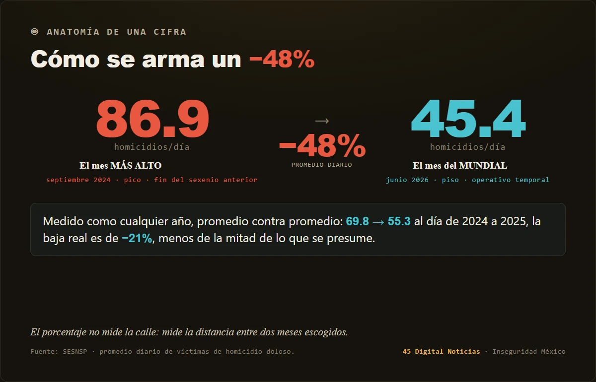
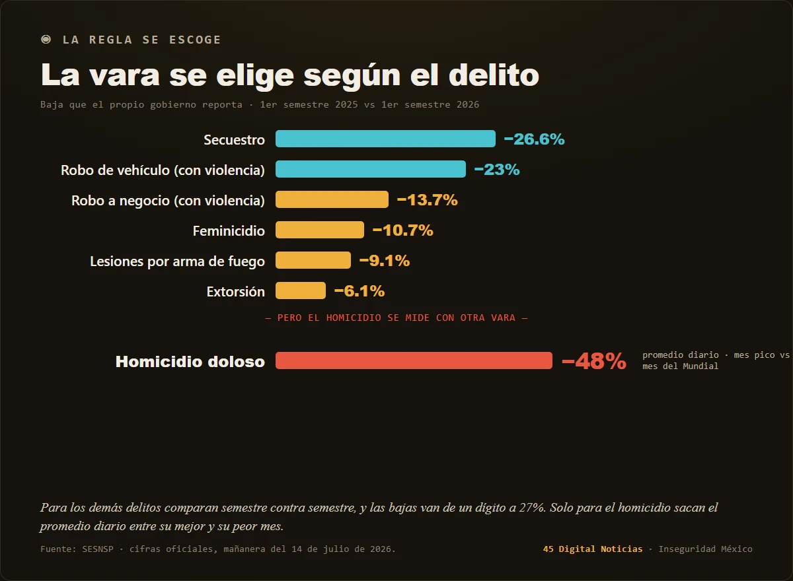

La paz prestada del Mundial
El gobierno presume que el homicidio doloso cayó 48%, pero cerró la cuenta en junio, el mes del Mundial. Con las sedes tomadas por la Guardia Nacional, la violencia sí cedió esas semanas: junio fue el mes menos violento del año, con una baja de 33.5% frente a junio de 2025. El problema es que fue un operativo, no una estrategia, y los operativos intensivos bajan el delito mientras duran y luego se desvanecen. Medida año contra año, la caída real ronda 21%, no 48%. El 48% junta dos extremos convenientes: el pico de septiembre de 2024 y el piso prestado del torneo. Con el concepto de disuasión residual de los crackdowns de Lawrence Sherman.

El 14 de julio, con las tribunas del Mundial todavía calientes, la presidenta anunció la cifra más redonda de su gobierno en seguridad: el homicidio doloso cayó 48 por ciento. El promedio diario de víctimas pasó de 86.9 en septiembre de 2024 a 45.4 en junio de 2026 . "Son vidas que no se perdieron", dijo. Y es verdad que bajó. La pregunta es otra: ¿bajó por la estrategia, o por el torneo?
Porque el mes que cierra la cuenta no es un mes cualquiera. Junio de 2026 fue el mes del Mundial, y en el Mundial pasó algo medible: el homicidio cayó 33.5 por ciento respecto a junio de 2025, de 1,818 a 1,209 víctimas . Entre el 11 de junio y el 5 de julio el país promedió 40 asesinatos diarios, el piso más bajo del año . En las tres sedes, la Ciudad de México, Jalisco y Nuevo León, el homicidio bajó 31 por ciento, y la capital registró su junio menos violento en quince años . No es un espejismo: la violencia letal de verdad cedió esas semanas.
Conviene preguntar por qué. Y la respuesta que dan los especialistas no es la estrategia nacional, sino el operativo. Para recibir al mundo, el gobierno inundó las sedes de Guardia Nacional, Ejército, cámaras y patrullas, concentró a millones de personas en unos cuantos puntos vigilados y alteró, en palabras de los analistas, "los mapas mentales" del crimen . Eso tiene nombre en la criminología. En 1990, Lawrence Sherman describió el efecto de los operativos intensivos, los crackdowns: producen una caída real del delito mientras duran, dejan un efecto residual breve al terminar, y luego se desvanecen . La disuasión no se acumula: se alquila. Un estudio sobre este mismo Mundial lo dijo sin anestesia: la baja "no significa que México sea menos violento", y no hay evidencia de que sea durable .
Aquí está el truco, y es más fino que los anteriores de esta serie. No hace falta cambiar de etiqueta ni promediar estados que arden; de eso ya hablamos. Basta con elegir el día de la foto. El gobierno cerró su estadística de éxito estructural, de casi veinte meses de estrategia, exactamente en el mes en que un operativo temporal tocaba fondo. Congela la base en el pico, septiembre de 2024, el mes más alto y último del sexenio anterior, y clava el punto final en el piso prestado del torneo. Entre esos dos extremos convenientes cabe casi cualquier porcentaje. Hoy tocó 48.

La disuasión no se acumula: se alquila.
Y hay una segunda coincidencia, que ya contamos en otra pieza. El mismo torneo que baja el número baja también la vigilancia. Ruben Durante y Ekaterina Zhuravskaya documentaron que las decisiones se cronometran contra los eventos que distraen a los medios y al público ; solo que aquí el evento distractor no únicamente abre la ventana para anunciar, además fabrica el dato que se anuncia. El piso y el silencio salen de la misma fuente. La casa se ordena cuando toca la visita, y el anfitrión presume la limpieza como si fuera su manera de vivir.
¿Cuánto bajó de verdad? Medido como se mide cualquier año, carpeta contra carpeta, el homicidio doloso cayó cerca de 21 por ciento de 2024 a 2025 : real, pero menos de la mitad de lo que se presume. Y el propio gobierno lo confirma sin querer: cuando compara semestre contra semestre, de enero-junio de 2025 a los mismos meses de 2026, reporta bajas modestas en los demás delitos de alto impacto, feminicidio 10.7, lesiones por arma de fuego 9.1, extorsión 6.1 por ciento . Ninguna cerca de 48. Solo para el homicidio saca la vara del promedio diario entre su mejor y su peor mes. Se elige la regla según lo que se quiere lucir.

La prueba llega sola, y pronto. El Mundial cierra el 19 de julio. En cuanto la Guardia Nacional levante el operativo de las sedes y el mundo deje de mirar, la criminología tiene una predicción escrita: el piso sube. Si la paz de junio fue obra de la estrategia, sobrevivirá al silbatazo final. Si fue obra del torneo, se irá con los aficionados. Julio y agosto, ya sin foco y sin despliegue, dirán cuál de las dos era.
A mi juicio, y lo ofrezco como opinión, ese es el fondo: no que el homicidio no haya bajado, sino que se presume como conquista permanente una tregua que se rentó por un mes. México fue, por unas semanas, el país ordenado que quiso mostrarle a sus visitantes. El error sería creernos la postal. La paz que se va con los aficionados no era paz: era hospitalidad.
Pieza hermana: «El partido que no televisan» Ver el expediente →
SRVO
Fuentes y referencias citadas
- Lawrence W. Sherman, "Police Crackdowns: Initial and Residual Deterrence", Crime and Justice 12 (1990), University of Chicago Press. DOI 10.1086/449163
- Cifra oficial del −48% (86.9 → 45.4 víctimas/día, sep-2024 a jun-2026), declarada el 14 de julio de 2026: Aristegui · El Universal
- Baja de homicidios durante el Mundial (−33.5%, 1,818 → 1,209; 40/día del 11-jun al 5-jul): am.com.mx · ejecentral
- Sedes con −31% y Ciudad de México, el junio menos violento en 15 años: El Universal · ejecentral
- "No significa que México sea menos violento", advertencia de especialistas sobre la baja del Mundial: Infobae
- Baja anual estándar (cerca de 21% en carpetas, 2024 a 2025) y comparativos semestre contra semestre de otros delitos de alto impacto: SESNSP, datos abiertos de incidencia delictiva
- Ruben Durante y Ekaterina Zhuravskaya, "Attack When the World Is Not Watching? US News and the Israeli-Palestinian Conflict", Journal of Political Economy 126(3) (2018), 1085-1133. DOI 10.1086/697202
- Pieza hermana: El partido que no televisan (45 Digital Noticias), sobre la ventana de atención del Mundial.